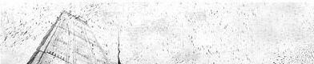

Debut single named in honor of stoicism philosophy, Marcus Aurelius 'Meditations' in particular, which helped me to become better. Two lines represent ancient columns.

:::..::....
» Music inspired by my heroes Frédéric Chopin and Antonio Vivaldi.
Single version from upcoming debut album 'Dark Romanticism'.
/back_cover/
Recorded at Havenstudio ::.. Winter, 2021
Photo by: Irena Carpaccio (www.instagram.com/murpaz/)
Album cover artwork: Vadim Korolchuk
|